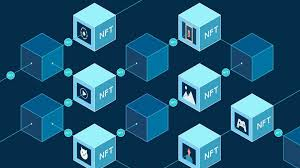

Blockchain Beyond Bitcoin
Understand the applications of blockchain technology beyond cryptocurrencies.
Blockchain technology, often associated with Bitcoin, has evolved far beyond cryptocurrency to become a transformative tool across various industries. At its core, blockchain is a decentralized, immutable ledger that ensures transparency, security, and efficiency in data management. In supply chain management, blockchain provides end-to-end traceability, ensuring authenticity and reducing fraud by tracking goods from origin to destination. In healthcare, it secures patient records, enabling interoperability between providers while maintaining privacy and reducing data breaches.
The financial sector benefits through smart contracts—self-executing agreements that streamline processes like insurance claims and cross-border payments without intermediaries. Governments are exploring blockchain for secure voting systems and transparent public record management. In real estate, blockchain simplifies property transactions by eliminating paperwork and ensuring secure ownership verification. Its application in intellectual property rights helps artists and creators protect and monetize their work. Furthermore, blockchain is powering Web3 initiatives, enabling decentralized applications (dApps) and empowering users to have greater control over their data. As the technology continues to mature, its potential extends to fostering trust and innovation across virtually every sector.
Blockchain is often linked with Bitcoin and other cryptocurrencies, but it is much more than just a technology for digital money. It is a powerful system that can change many industries by making data and transactions more secure, transparent, and trustworthy. Let’s explore how blockchain works and how it’s being used beyond Bitcoin.
1. What is Blockchain?
A blockchain is a digital ledger—a record of transactions—that is shared across a network of computers. Unlike traditional databases, a blockchain is decentralized, meaning no single person or company controls it. Every transaction is grouped into a "block" and linked to the previous one, forming a "chain" of information that is very hard to tamper with.
2. Why is Blockchain Special?
- Security: Data on a blockchain is protected by advanced encryption.
- Transparency: Everyone in the network can see the same version of the ledger.
- Decentralization: No need for a middleman, like a bank, to verify transactions.
3. Blockchain Uses Beyond Bitcoin
Here are some exciting ways blockchain is changing industries:
a) Supply Chain Management
Blockchain helps track products from the factory to the store. For example, a grocery store can use it to trace fruits from the farm to ensure they are fresh and safe. It reduces fraud and makes the supply chain more efficient.
b) Healthcare
Blockchain can store medical records securely. Patients control who gets access to their data, and doctors can quickly see the complete medical history without worrying about fake or missing records.
c) Voting Systems
Blockchain can make elections more secure by preventing fraud and making the voting process transparent. Every vote is recorded permanently, and no one can change it.
d) Real Estate
Buying or selling property involves a lot of paperwork and trust. Blockchain can create smart contracts that automatically complete transactions when conditions are met, reducing time and cost.
e) Digital Art and NFTs
Non-fungible tokens (NFTs) use blockchain to prove ownership of unique digital items like art, music, and videos. It helps artists earn money from their creations and prevents copying.
f) Banking and Finance
While Bitcoin is a digital currency, traditional banks are also using blockchain to improve money transfers. It makes transactions faster and cheaper by removing middlemen.
4. Challenges of Blockchain
- Energy Use: Some blockchains consume a lot of electricity.
- Regulation: Many governments are still figuring out how to regulate blockchain-based systems.
- Complexity: Blockchain technology can be difficult to understand and use for businesses.
The Future of Blockchain
Blockchain is still growing, and its potential is huge. It can make industries more secure, efficient, and fair. From tracking food safety to securing personal identities, it is set to change how we trust and share information.
In summary, blockchain is much more than Bitcoin. It is a revolutionary technology that is shaping a smarter, safer, and more connected world.